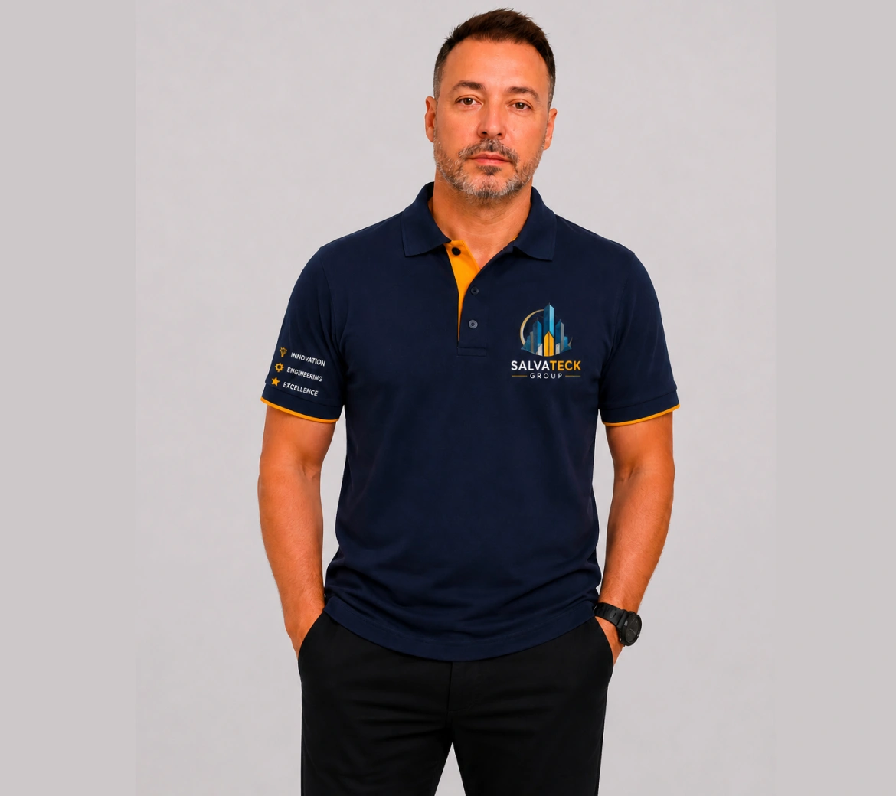

Prevenção
Atenção à conservação e ao funcionamento das instalações.
A Salvateck Group Ltda. é especializada em soluções técnicas, manutenção predial e gestão operacional de serviços para condomínios, edifícios residenciais e empreendimentos comerciais.
Fundada em 2024, em Maringá, Paraná, a Salvateck nasceu com um propósito muito claro: oferecer uma maneira mais organizada, eficiente e profissional de cuidar da infraestrutura dos edifícios, valorizando a conservação do patrimônio, a segurança das instalações e a qualidade de vida de quem utiliza esses espaços diariamente.
Acreditamos que a manutenção de um condomínio não deve acontecer apenas quando surge um problema. Deve ser planejada, acompanhada e executada de maneira responsável.
Trabalhamos com uma abordagem que combina prevenção, inspeção, identificação de necessidades, planejamento de intervenções e manutenção corretiva.
Atenção à conservação e ao funcionamento das instalações.
Identificação das necessidades de manutenção de cada empreendimento.
Organização das intervenções e acompanhamento das demandas.
Manutenção preventiva e corretiva, de acordo com cada necessidade.
Nossa atuação contempla serviços de manutenção elétrica, hidráulica, iluminação, bombas e sistemas de abastecimento, conservação predial, pequenos reparos, pintura, impermeabilização e intervenções de manutenção em coberturas e áreas comuns, sempre respeitando a natureza do serviço e as exigências técnicas aplicáveis.
Além da execução dos serviços, oferecemos acompanhamento operacional, vistorias técnicas, levantamentos de necessidades, registros fotográficos, relatórios de inspeção, organização de orçamentos e acompanhamento de prestadores de serviços. Nosso objetivo é proporcionar aos síndicos e responsáveis pelos empreendimentos maior visibilidade sobre as condições de conservação e manutenção de suas estruturas.

José Salvador Oliveira Costa
A Salvateck foi fundada por José Salvador Oliveira Costa, profissional com trajetória internacional, formação em Engenharia Civil com especialização em Estruturas e experiência profissional na Europa, além de formação técnica em Eletrotécnica e estudos na área de Edificações.
Essa experiência contribui para uma visão abrangente das necessidades de conservação, funcionamento e manutenção das edificações.
Buscamos construir relações de confiança, trabalhar com transparência e apresentar soluções adequadas à realidade de cada empreendimento. Nosso compromisso é transformar a manutenção predial em um processo organizado, preventivo e confiável.